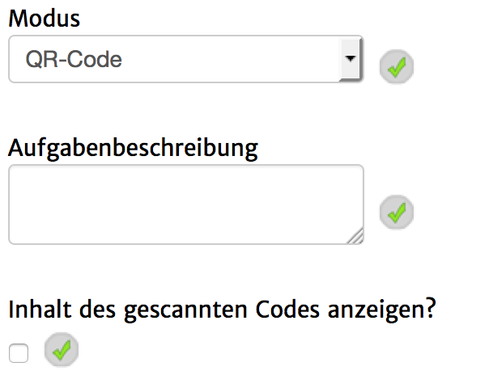
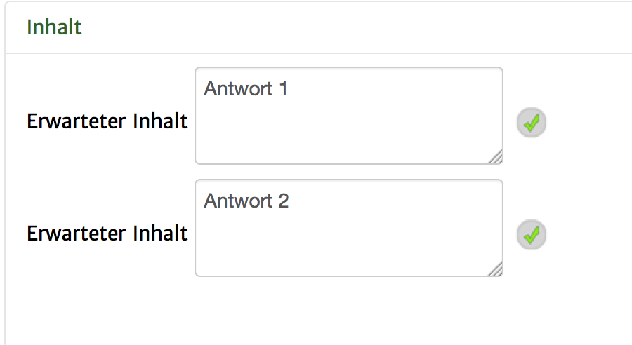
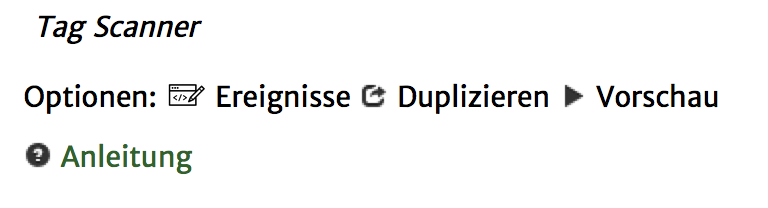

Tag Scanner
Statt der Navigation mit Hilfe von GPS und Karte, können auch sogenannte QR-Codes benutzt werden, damit die App weiß, an welchem Ort sich der Spieler befindet. Dies ist besonders in Innenräumen empfehlenswert. Das sind ausdruckbare Barcodes, die mit Hilfe der Kamera des mobilgerätes gescannt werden können. Bitte beachte allerdings, dass die Codes eine Lichtquelle benötigen und nicht spiegeln dürfen, damit die Kamera sie erkennt.
Unter goqr.me können diese Codes spielend einfach erstellt werden. Gib einfach einen beliebigen Inhalt, welcher deine QR Codes voneinander unterscheidet, in den Text ein (z.B. "Antwort 1", "Antwort 2", usw.), klicke auf "Herunterladen" und drucke den Code aus. Bringe ihn nun an dem gewünschten Ort an.
Noch besser wäre den Inhalt mit einer URL und einem Fragezeichen dazwischen zu verbinden, z.B. "quest-mill.com/geoquest/?AntwortA". So können Interessierte, die die App nicht benutzen, aber den QR Code scannen trotzdem Informationen zu der App erhalten.
In der App sieht dieser Seitentyp ungefähr so aus:
Zunächst blicken wir auf die Einstellungsmöglichkeiten dieses Seitentyps.
|  |
Modus: bitte auf "QR-Code" stehen lassen. Unterstützung für NFC-Tags ist aktuell nicht weiter geplant, da sämtliche iOS-Geräte keine Unterstützung bieten.
Aufgabenbeschreibung: Der Text der im oberen Bereich der Seite angezeigt wird.
Inhalt des gescannten Codes anzeigen?: Wenn hier ein Haken gesetzt ist, wird der Text, welcher im QR-Code eingetragen ist beim Einscannen kurz eingeblendet. Dies sollten aber keine langen Texte sein, da die Ausführung der App nicht angehalten wird. |
Um eine beliebige Anzahl von QR-Codes scannbar zu machen und darauf unterschiedlich zu reagieren, befolge die folgenden Schritte:
1. Unter Inhalt die möglichen QR-Code-Inhalte hinzufügen.

2. Auf "Ereignisse" klicken

3A. Falls alle eingetragenen Codes die gleiche Aktion benötigen oder es gar nur einen richtigen Code gibt, bei erfolgreiche Interaktion (einer der erwarteten Inhalte wurde gescannt) und erfolgloser Interaktion (der gescannte Code beinhaltete keinen der erwarteten Inahlte) mit einem Klick auf "+" die gewünschten Aktionen hinzufügen.

Falls es gewünschte Aktionen für beide Fälle gibt (z.B. ein Seitenwechsel) können diese unter "Ende der Mission" hinzugefügt werden.
3B. Falls zwischen den verschiedenen möglichen erwarteten Inhalten genauer unterschieden werden soll, so muss nun unter "Ende der Mission" für jede der definierten QR-Codes ein Fall angelegt werden.
Dazu geht man folgendermaßen vor:
3B.1 Unter "Ende der Mission" auf das + Klicken und in der Liste "Wenn-Dann-Bedingung" auswählen und hinzufügen.

4B.2 Wieder zu "Ende der Mission herunterscrollen" und auf die neu angelegte "Wenn-Dann-Bedingung" klicken.

4B.3 In dem nun geöffneten Fenster gibt es nun zwei Interaktionsmöglichkeiten: Eine Bedinung und eine Aktion die darauf folgt definieren.
Für die Bedingung gibt es vorgefertigte Einstellungen, die mit einem Klick auf "+Inhalte" oder "+Erweitert" aufgerufen werden können.
Für den hier vorliegenden Fall, klicken wir nun auf "+Inhalte" und wählen den gewünschten QR-Code aus.

4B.4
Das Fenster müsste nun ungefähr so aussehen:

ACHTUNG! Wenn du den QR-Code-Inhalt abänderst, musst du diese Änderung auch in der Wenn-Dann-Bedingung angeben.
4B.5 Nun können weiter unten in dem Fenster die Aktionen, die bei der Auswahl dieser Antwort ausgeführt werden sollen, definiert werden.

Wenn also zum Beispiel beim Scannen eines bestimmten QR-Codes, eine bestimmte Seite aufgerufen werden soll, kann hier die Aktion "Seite aufrufen" und darin die gesuchte Seite spezifiziert werden.